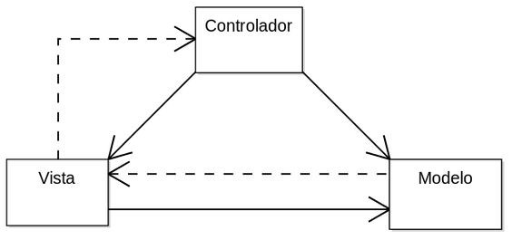

Moseñor Nouel,Bonao R.D 27/05/2024
Modelo Vista Controlador
Que es Modelo Vista Controlador?
El Modelo-Vista-Controlador (MVC) es un patrón de diseño arquitectónico que se utiliza comúnmente en el desarrollo de software para organizar el código de una aplicación de manera eficiente y modular. Este patrón separa las preocupaciones relacionadas con la interfaz de usuario, la lógica de la aplicación y el almacenamiento de datos en tres componentes principales: el Modelo, la Vista y el Controlador. Cada uno de estos componentes tiene responsabilidades específicas y trabaja en conjunto para lograr una estructura más clara y mantenible.
1. Modelo (Model): Representa los datos y la lógica de la aplicación. El modelo se encarga de
gestionar
el estado de la aplicación, realizar operaciones sobre los datos y notificar a la Vista sobre los
cambios relevantes.
2. Vista (View): Es responsable de la presentación de la interfaz de usuario. Muestra la información
al
usuario y recoge las interacciones del usuario. La Vista obtiene los datos del Modelo, pero no
realiza
operaciones de lógica de negocio. También recibe actualizaciones del Modelo para reflejar cambios en
la
interfaz de usuario.
3. Controlador (Controller): Actúa como intermediario entre el Modelo y la Vista. Recibe las
interacciones
del usuario desde la Vista, procesa la lógica de negocio correspondiente (si es necesario) y
actualiza el
Modelo
en consecuencia. También puede recibir actualizaciones del Modelo y reflejar esos cambios en la
Vista.
Ventajas del Patrón MVC Separación de Responsabilidades: Permite la separación clara de la lógica de negocio, la presentación y la gestión de datos. Facilita el Mantenimiento: Al ser modular, facilita la identificación y corrección de errores y la introducción de nuevas funcionalidades sin afectar otras partes del sistema. Reutilización del Código: La modularidad y la separación de responsabilidades facilitan la reutilización del código en diferentes partes de la aplicación. Escalabilidad: Permite escalar y gestionar aplicaciones de manera eficiente, especialmente en proyectos grandes.
